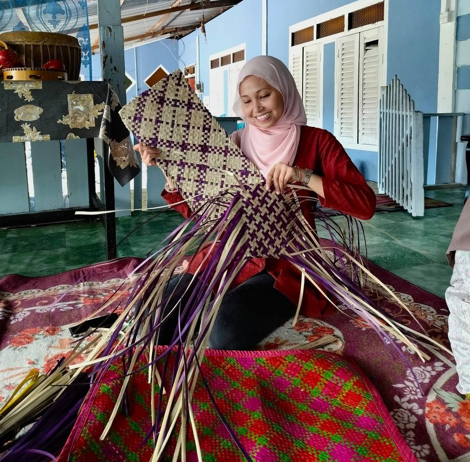
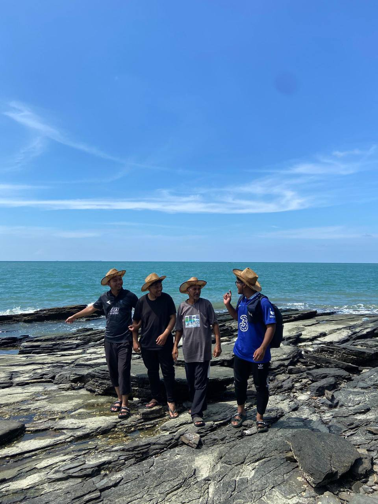
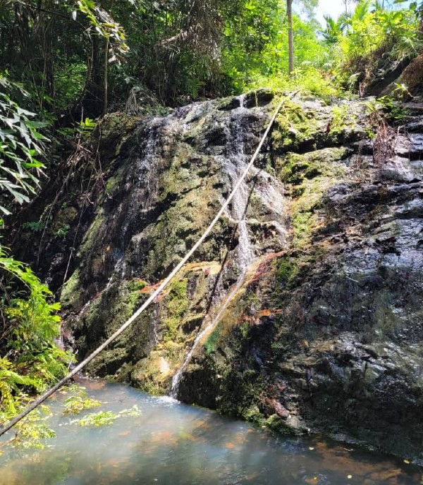

Activities
Activities
Activities
Perfect Tour

Homestay Experience with a Local Family in Pulau Tuba
Through the homestay program in Pulau Tuba, visitors have the opportunity to stay with a local family, providing them with an in-depth experience of authentic village life.

Making Traditional Kuih
Visitors can also enjoy the experience of cooking traditional kuih (local sweets) and savoring village dishes made from fresh seafood. This activity offers a hands-on opportunity to learn the art of making kuih, a key aspect of Malaysian culinary heritage, with ingredients sourced directly from the island’s surroundings.

Traditional Handicrafts
Weaving pandanus (mengkuang) bags and mats is a traditional craft passed down through generations, offering visitors the chance to learn and appreciate this heritage skill. This hands-on activity allows guests to engage with local artisans, understand the intricate process of preparing and weaving mengkuang leaves, and gain insight into the cultural significance of these handmade items in daily village life.

Harvesting from the Sea
Visitors can take part in traditional fishing activities, such as catching bronok a sea creature similar to sea cucumber, prawns, crabs, and fish like kebasi and jenahak. This hands-on experience allows guests to join local fishermen at sea or along the shore, learning traditional techniques while appreciating the rich marine life that sustains the island community.

Hiking to Gua Wang Buloh and Gua Kelawar
The hike to Gua Wang Buloh and Gua Kelawar offers an adventurous experience that combines natural beauty with cave exploration. Along the trail, visitors will enjoy lush tropical forest views, unique limestone pathways, and the soothing sounds of nature.

Keropok Lekor Show